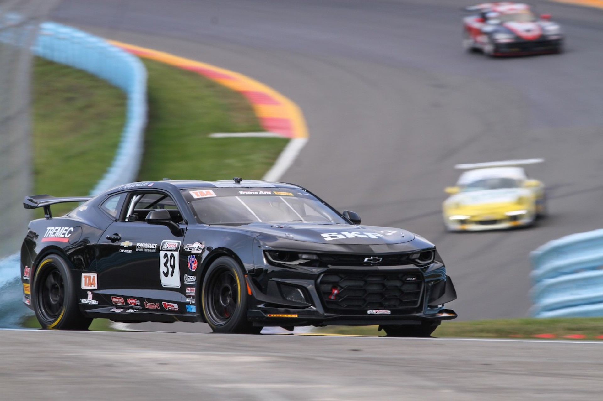
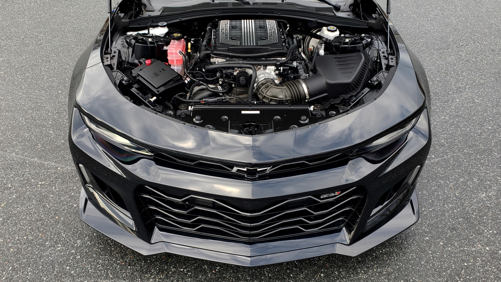

Legendary Performance
The Chevrolet Camaro is known for its powerful engines, aggressive design, and outstanding performance. From the classic muscle era to modern engineering, the Camaro continues to represent speed and innovation.

Engine Specifications
Camaro SS
Engine: 6.2L LT1 V8
Horsepower: 455 hp
Torque: 617 Nm
Transmission: 6-Speed Manual / 10-Speed Automatic
Camaro ZL1
Engine: 6.2L Supercharged V8
Horsepower: 650 hp
Torque: 881 Nm
0-100 km/h: Around 3.5 seconds
Performance Features
- High-performance V8 engines
- Advanced suspension system
- Aerodynamic body design
- Track-focused driving modes
- Powerful braking system

Racing Legacy
The Camaro has a strong connection with motorsports and has been used in professional racing events. Its performance-focused engineering has made it one of the most recognized American muscle cars in history.